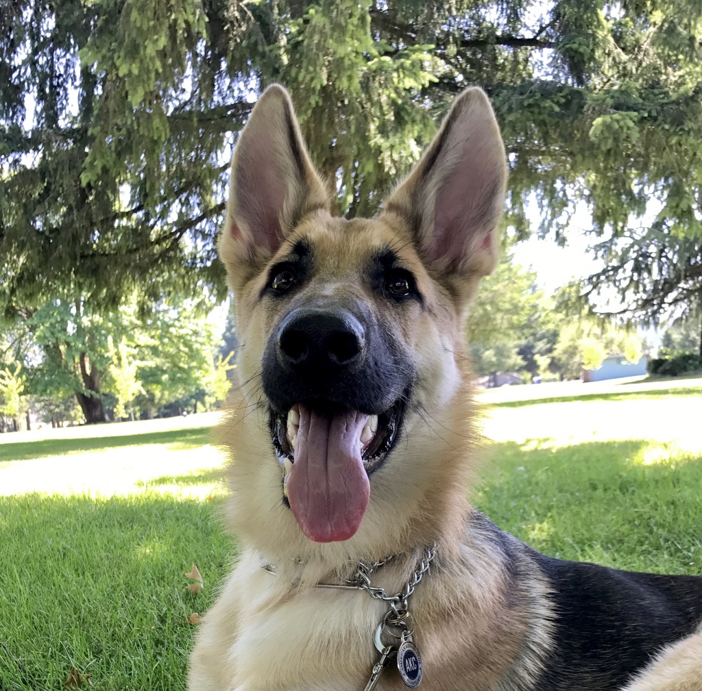

Hello!
My name is Adrienne Karnoski.
I enjoy long walks on the beach, smooth jazz, and dining by the soft glow of Nexflix from my laptop. If sarcasm was a sport I would be the coach, and my impeccable use of the proper there/their/they're is awe-inspiring. I was in the Navy for five years, where I learned the human body can run off of less than three hours of sleep, caffiene is a food group, and iBuprofen fixes all of your problems.
Goal
My life goal is to someday work for Amazon and have my own personal drone to deliver my orders to me. I would send my drone on errands and have it attend social events in my place so I would never have to hear comments on how my name is like Adrian from Rocky or it's not appropriate to put all of the Olive Garden breadsticks in my purse ever again.
It may be a long shot, but as Rocky Balboa once said:
❝ It’s your right to listen to your gut, it ain’t nobody’s right to say no after you earned the right to be where you want to be and do what you want to do! ❞
Quiz Answers:
Am I the oldest child?
No, after having me my parents decided one child was enough. I may or may not have been a handful.
Do I have all ten fingerprints?
No, I lost the end of my left pointer finger in a fight with a sliding van door when I was four.
Can I eat a McDonald's 20 piece McNugget in one sitting?
Yes, if it's not a 20 piece it's a waste of my time.
Is Romance my favorite movie genre?
No, I only like horror movies. However, if you watch horror movies backwards they all live happily ever after in the end.
Do I love my dog?
Yes, of course I love my dog. And you should too.
